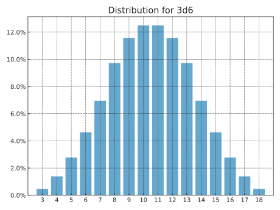

dyce provides two core primitives for enumeration.
H objects represent histograms for modeling discrete outcomes.
They encode finite discrete probability distributions as integer counts without any denominator.
P objects represent pools (ordered sequences) of histograms.
If all you need is to aggregate outcomes (sums) from rolling a bunch of dice (or perform calculations on aggregate outcomes), H objects are probably sufficient.
If you need to select certain histograms from a group prior to computing aggregate outcomes (e.g., taking the highest and lowest of each possible roll of n dice), that’s where P objects come in.
As a wise person whose name has been lost to history once said: “Language is imperfect. If at all possible, shut up and point.”
So with that illuminating (or perhaps impenetrable) introduction out of the way, let’s dive into some examples!
Basic examples
H(n) is shorthand for explicitly enumerating outcomes \([{ {1} .. {n} }]\), each with a frequency of 1.
A normal, six-sided die (d6) can be modeled as:
Tuples with repeating outcomes are accumulated.
A six-sided “2, 3, 3, 4, 4, 5” die can be modeled as:
12
>>>H((2,3,3,4,4,5))H({2:1,3:2,4:2,5:1})
A fudge die can be modeled as:
12
>>>H((-1,0,1))H({-1:1,0:1,1:1})
Python’s matrix multiplication operator (@) is used to express the number of a particular die (roughly equivalent to the “d” operator in common notations).
The outcomes of rolling and summing two six-sided dice (2d6) are:
Where n is an integer, P(n, ...) is shorthand for P(H(n), ...).
Python’s matrix multiplication operator (@) can also be used with pools.
The above can be expressed more succinctly.
Histograms should be sufficient for most calculations.
However, pools are useful for “keeping” or “taking” (selecting) only some of each roll’s outcomes.
This is done by providing one or more index arguments to the P.h method or the P.rolls_with_counts method.
Indices can be integers, slices, or a mix thereof.
Outcome indices in rolls are ordered from least to greatest with negative values counting from the right, as one would expect (i.e., [0], [1], …, [-2], [-1]).
Summing the least two faces when rolling three six-sided dice would be:
1234
>>>3@P(6)3@P(H({1:1,2:1,3:1,4:1,5:1,6:1}))>>>(3@P(6)).h(0,1)# see warning below about parenthesesH({2:16,3:27,4:34,5:36,6:34,7:27,8:19,9:12,10:7,11:3,12:1})
Mind your parentheses
Parentheses are needed in the above example because @ has a lower precedence than . and […].
123456
>>>2@P(6).h(1)# equivalent to 2@(P(6).h(1))Traceback(mostrecentcalllast):...IndexError:tupleindexoutofrange>>>(2@P(6)).h(1)H({1:1,2:3,3:5,4:7,5:9,6:11})
Taking the least, middle, or greatest face when rolling three six-sided dice would be:
>>>p3d6.h(2)# greatest (p3d6.h(-1) would also work)H({1:1,2:7,3:19,4:37,5:61,6:91})>>>print(p3d6.h(-1).format(width=65))avg|4.96std|1.14var|1.311|0.46%|2|3.24%|#3|8.80%|####4|17.13%|########5|28.24%|##############6|42.13%|#####################
Summing the greatest and the least faces when rolling a typical six-die polygonal set would be:
>>>d10=H(10)-1>>>d10# a common “d10” with faces [0 .. 9]H({0:1,1:1,2:1,3:1,4:1,5:1,6:1,7:1,8:1,9:1})>>>h=P(4,6,8,d10,12,20).h(0,-1)>>>print(h.format(width=65,scaled=True))avg|13.48std|4.40var|19.391|0.00%|2|0.01%|3|0.06%|4|0.30%|#5|0.92%|#####6|2.03%|###########7|3.76%|####################8|5.57%|##############################9|7.78%|###########################################10|8.99%|##################################################11|8.47%|###############################################12|8.64%|################################################13|8.66%|################################################14|6.64%|####################################15|5.62%|###############################16|5.16%|############################17|5.00%|###########################18|5.00%|###########################19|5.00%|###########################20|5.00%|###########################21|4.50%|#########################22|2.01%|###########23|0.73%|####24|0.18%|
Both histograms and pools support various comparison operations.
The odds of observing all even faces when rolling \(n\) six-sided dice, for \(n\) in \([1 .. 6]\) is:
1 2 3 4 5 6 7 8 910111213
>>>d6_even=H(6).apply(lambdaoutcome:outcome%2==0)>>>d6_even# basically a fair coin whose sides are False and TrueH({False:3,True:3})>>>forninrange(6,0,-1):...number_of_evens_in_nd6=n@d6_even...all_even=number_of_evens_in_nd6.eq(n)...print(f"{n: >2}d6: {all_even[1]/all_even.total: >6.2%}")6d6:1.56%5d6:3.12%4d6:6.25%3d6:12.50%2d6:25.00%1d6:50.00%
The odds of scoring at least one nine or higher for any one of \(n\) “exploding” six-sided dice, for \(n\) in \([1 .. 10]\) is:
1 2 3 4 5 6 7 8 910111213141516171819
>>>fromdyceimportexplode_n>>># By the time we're exploding to a third die, we're guaranteed>>># a nine or higher, so we don't need to explode past that>>>exploding_d6=explode_n(H(6),n=2)>>>forninrange(10,0,-1):...d6e_ge_9=exploding_d6.ge(9)...number_of_nines_or_higher_in_nd6e=n@d6e_ge_9...at_least_one_9=number_of_nines_or_higher_in_nd6e.ge(1)...print(f"{n: >2}d6-exploding: {at_least_one_9[1]/at_least_one_9.total: >6.2%}")10d6-exploding:69.21%9d6-exploding:65.36%8d6-exploding:61.03%7d6-exploding:56.15%6d6-exploding:50.67%5d6-exploding:44.51%4d6-exploding:37.57%3d6-exploding:29.77%2d6-exploding:20.99%1d6-exploding:11.11%
Dependent probabilities
Probabilities involving dependent terms can be expressed via a callback passed to expand.
First, we express independent terms as histograms or pools.
Second, we express the dependent term as a function that will be called once for each of the Cartesian product of the results from each independent term.
Outcomes from independent histogram terms are passed to the dependent function as HResult objects.
Rolls from independent pool terms are passed as PResult objects.
Finally, we pass the dependent function to expand, along with the independent terms.
To illustrate, say we want to roll a six-sided die and compare whether the result is strictly greater than its distance from some constant.
Instead of a constant, let’s use another die as a second independent term.
We’ll roll a four-sided die (d4) and a six-sided die and compare whether the six-sided roll is strictly greater than the absolute difference between the dice.
1 2 3 4 5 6 7 8 9101112131415
>>>d4=H(4)# first independent term>>>d6=H(6)# second independent term>>>defsecond_is_strictly_greater_than_first(...first:HResult[int],second:HResult[int]...)->bool:...returnsecond.outcome>abs(first.outcome-second.outcome)# dependent term>>>second_gt_first_h=expand(second_is_strictly_greater_than_first,d4,d6)>>>print(second_gt_first_h.format(width=65))avg|0.83std|0.37var|0.14False|16.67%|########True|83.33%|########################################
In the alternative, one could nest the expand call, where the innermost holds the dependent term, and the outer functions each establish the scope of their respective independent outcomes.
However, this isn’t very readable, and is often less efficient than using a single function.
This technique also works where the dependent term requires inspection of rolls from one or more pools as independent terms.
Let’s say we have two pools.
A roll from the first pool wins if it shows no duplicates but a roll from the second does.
A roll from the second pool wins if it shows no duplicates but a roll from the first does.
Otherwise, it’s a tie (i.e., if neither or both rolls show duplicates).
Let’s compare how three six-sided dice fair against two four-sided dice.
1 2 3 4 5 6 7 8 9101112131415161718192021222324
>>>fromdyce.evaluationimportPResult>>>fromenumimportIntEnum>>>classDupeVs(IntEnum):...SECOND_WINS=-1# where second.roll shows no duplicates, but first.roll does...DRAW=0# where both rolls show no duplicates or rolls pools have duplicates...FIRST_WINS=1# where first.roll shows no duplicates, but second.roll does>>>defcompare_duplicates(first:PResult[int],second:PResult[int])->DupeVs:...returnDupeVs(...(len(set(first.roll))==len(first.roll))...-(len(set(second.roll))==len(second.roll))...)>>>dupe_vs_h=expand(compare_duplicates,P(6,6,6),P(4,4))>>>dupe_vs_hH({<DupeVs.SECOND_WINS:-1>:12,<DupeVs.DRAW:0>:19,<DupeVs.FIRST_WINS:1>:5})>>>print(dupe_vs_h.format(width=65))avg|-0.19std|0.66var|0.43<DupeVs.SECOND_WINS:-1>|33.33%|#########<DupeVs.DRAW:0>|52.78%|###############<DupeVs.FIRST_WINS:1>|13.89%|####
Expansion and recursion
Explosion is a great way to illustrate use of the expand interface.
One way to approximate an exploding die is to recursively re-roll and add to a running total whenever the outcome is the die’s highest.
This framing is intuitive because it maps to well to reality.
We might start with the following implementation:
>>>fromdyceimportHResult,expand>>>defnaive_explode(result:HResult[int])->H[int]|int:...ifresult.outcome==max(result.h):...# If we've rolled the max for this die, add another die roll...# to our existing outcome...returnresult.outcome+expand(naive_explode,result.h)...returnresult.outcome>>>d6=H(6)>>>h=expand(naive_explode,d6)>>>print(h.format(width=65,scaled=True))avg|4.20std|3.26var|10.641|16.67%|#################################################2|16.67%|#################################################3|16.67%|#################################################4|16.67%|#################################################5|16.67%|#################################################7|2.78%|########8|2.78%|########9|2.78%|########10|2.78%|########11|2.78%|########13|0.46%|#14|0.46%|#15|0.46%|#16|0.46%|#17|0.46%|#19|0.08%|...23|0.08%|25|0.01%|...29|0.01%|31|0.00%|...47|0.00%|>>>hH({1:233280,...,5:233280,...,43:1,...,47:1})
What just happened?
It appears that we went no further than eight rolls (a first roll plus up to seven explosions).
Folks familiar with this domain might recognize the distribution looks mostly correct, but the counts are a bit…off.
We’re also missing the final outcome of 48.
We also got a TruncationWarning, which provides a hint.
The way to eliminate a branch from consideration when recursing with expand is to explicitly return the empty histogram H({}) from our function.
(See the #!always_reroll_on_one example from expand’s docstring.)
We’re not explicitly returning H({}) in our function, but there are two scenarios where that is done automatically.
The first is when we’ve exhausted our precision budget (which is what happened in our example above).
And the second is when we’ve exhausted the call stack:
123456789
>>>importsys>>>fromfractionsimportFraction>>>fair_coin=H({0:1,1:1})>>>expand(...naive_explode,...fair_coin,...precision=Fraction(0),...)# these numbers get *big*H({0:...})
For the above line, if expand returns H({}), our function will also return H({}) for that branch.
This is because adding H({}) to anything is H({}):
12
>>>H({})+1024H({})
This explains why 48 is missing from our results above.
A more illustrative case is trying to “explode” a one-sided die (d1), where no branch is “settled” before exhaustion occurs:
12
>>>expand(naive_explode,H(1))H({})
How do we fix this?
Great question!
Thanks for asking!
It’s easy.
We can check.
1 2 3 4 5 6 7 8 9101112
>>>defguarded_explode(result:HResult[int])->H[int]|int:...ifresult.outcome==max(result.h):...inner=expand(guarded_explode,result.h)...ifinner:...# Only return another histogram if we weren't truncated...# somewhere down the line...returnresult.outcome+inner...# Every other case returns our current outcome...returnresult.outcome>>>expand(guarded_explode,d6)H({...,19:1296,...,23:1296,25:216,...,29:216,31:36,...,35:36,37:6,...,41:6,43:1,...,48:1})
Much better.
We can now recognize the counts as powers of our maximum face.
But how can we control the number of explosions?
Sure, we could do some math and fiddle with expand’s precision parameter.
But that’s fragile and highly domain-specific.
Instead, we can take advantage of expand’s ability to pass down arbitrary keyword arguments to make our depth counting explicit.
1 2 3 4 5 6 7 8 9101112
>>>defguarded_explode_n(result:HResult[int],n:int=0)->H[int]|int:...ifn>0andresult.outcome==max(result.h):...inner=expand(guarded_explode_n,result.h,n=n-1)...ifinner:...returnresult.outcome+inner...# Every other case returns our current outcome...returnresult.outcome>>>expand(guarded_explode_n,d6,n=3)H({1:216,2:216,3:216,...,22:1,23:1,24:1})>>>expand(guarded_explode_n,d6,n=0)==d6True
Our function is still implicitly limited by the precision parameter, but we can make that go away by setting it to Fraction(0) as we did in our recursion exhaustion illustration above.
If we wanted to make that the default, we could create a simple wrapper.
The above is very nearly the implementation for explode_n, which offers an additional resolver parameter that allows for some additional flexibility.
Let’s say we’re considering a new exploding mechanic where, to explode, one must roll the highest outcome on a given die.
However, on the second explosion, re-explosion occurs if either the highest or second highest outcome is rolled.
On the third explosion, anything greater than or equal to the third highest outcome will re-explode, etc.
In order to have somewhere to stop, we’ll never allow explosions if the minimum outcome is rolled.
>>>fromdyceimportexplode_n>>>defexplosions_get_easier_resolver(...result:HResult[T],n_left:int,n_done:int...)->H[T]|T:...return(...result.h...# Explode only maximum value if we haven't exploded yet,...# on [max - 1..max] if we've already exploded once, on...# [max - 2..max] if we've already exploded twice, etc....# ......if(...result.outcome>=max(result.h)-n_done# type: ignore[operator,type-var]...and...# ... but never explode on the minimum...result.outcome>min(result.h)# type: ignore[operator,type-var]...)...elseresult.outcome...)>>>d10=H(10)>>>h=explode_n(...d10,...n=3,...resolver=explosions_get_easier_resolver,...)>>>print(h.format(width=65,scaled=True))avg|6.19std|4.71var|22.171|10.00%|##################################################2|10.00%|##################################################3|10.00%|##################################################4|10.00%|##################################################5|10.00%|##################################################6|10.00%|##################################################7|10.00%|##################################################8|10.00%|##################################################9|10.00%|##################################################11|1.00%|#####12|1.00%|#####13|1.00%|#####14|1.00%|#####15|1.00%|#####16|1.00%|#####17|1.00%|#####18|1.00%|#####20|0.10%|21|0.20%|#22|0.20%|#23|0.20%|#24|0.20%|#25|0.20%|#26|0.20%|#27|0.10%|28|0.01%|29|0.03%|30|0.05%|31|0.06%|32|0.06%|33|0.06%|34|0.06%|35|0.06%|36|0.06%|37|0.06%|38|0.05%|39|0.03%|40|0.01%|
Now let’s consider a “diminishing returns” explosion mechanic, where standard polygonal dice “degrade” into their next smallest die for the next explosion.
H.probability_items eases integration with plotting packages.
If Matplotlib is installed dyce.viz provides plotting conveniences.
For something more sophisticated, anydyce provides additional interactive visualization tools.
fromdyce.dimporth3d6fromdyce.vizimportplot_barax=plot_bar(h3d6)ax.set_title("Distribution for 3d6")

Time to get meta-evil on those outcomes!
Thanks to numeraryoptype, dyce offers typing support for arbitrary number-like outcomes, including primitives from symbolic expression packages such as SymPy.
Be aware that, depending on implementation, performance can suffer quite a bit when using symbolic primitives.
For histograms and pools, dyce remains opinionated about ordering.
For non-critical contexts where relative values are indeterminate, dyce will attempt a “natural” ordering based on the string representation of each outcome.
This is to accommodate symbolic expressions whose relative values are often unknowable.
SymPy does not even attempt simple relative comparisons between symbolic expressions, even where they are unambiguously resolvable.
Instead, it relies on the caller to invoke its proprietary solver APIs.
dyce, of course, is happily ignorant of all that keenness.
(As it should be.)
In practice, that means that certain operations won’t work with symbolic expressions where correctness depends on ordering outcomes according to relative value (e.g., dice selection from pools).
Anywhere you see a JupyterLite logo , you can click on it to immediately start tinkering with a temporal instance of that example.
Just be aware that changes are stored in browser memory, so make sure to download any notebooks you want to preserve.